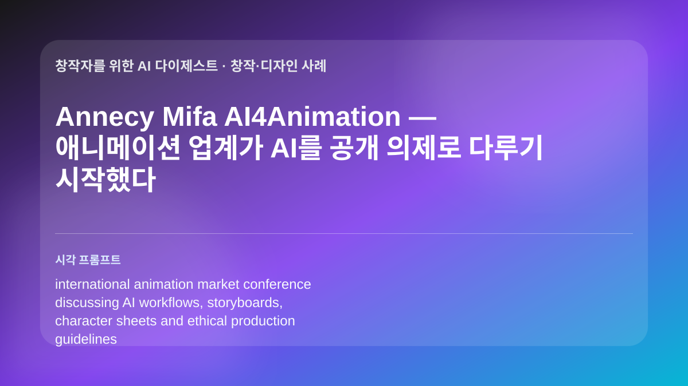
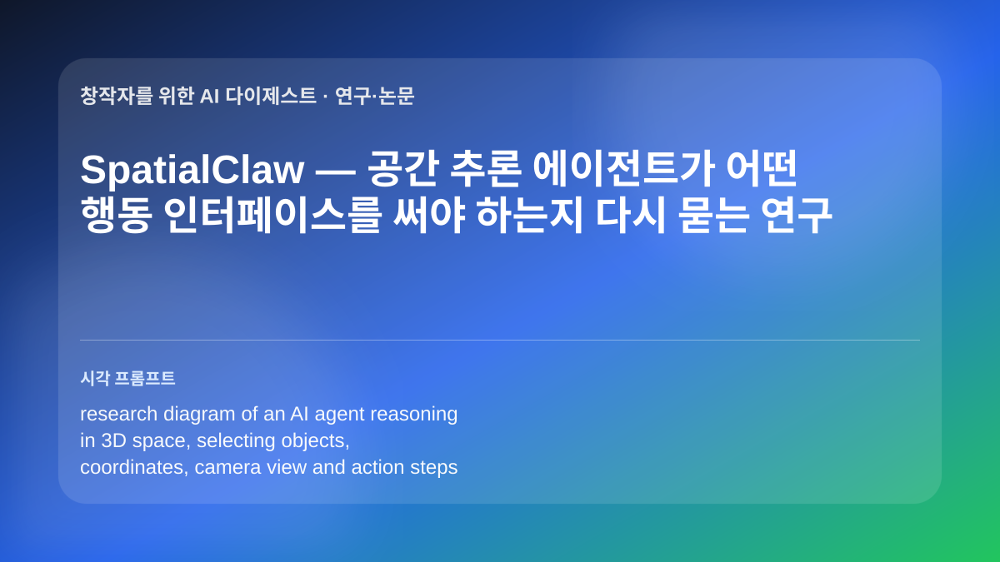

TechCrunch는 iOS 27의 AI 변화가 Siri 개편만이 아니라, 사진·메시지·캘린더·비밀번호·단축어 같은 기본 앱 안에 작게 들어가는 기능들로 나타난다고 정리했습니다. 예를 들어 영수증 사진에서 금액을 읽어 나누거나, 대화 내용을 바탕으로 리마인더·사진 공유·일정 추가를 제안하고, 자연어로 캘린더 일정을 만들며, Shortcuts 자동화 진입 장벽을 낮추는 흐름입니다. 공개 베타와 정식 배포 전까지 기능 범위는 달라질 수 있지만, 모바일 OS 안에서 작업 맥락을 읽는 AI가 늘어나는 방향은 분명합니다.
인사이트: 콘텐츠 제작자와 교육자는 별도 AI 앱을 열지 않고 촬영·정리·공유·반복 작업을 줄이는 쪽으로 활용할 수 있습니다. 수업 사진 정리, 행사 기록 공유, 촬영 일정 추가, 간단한 워크플로우 자동화처럼 스마트폰에서 이미 하던 일을 줄이는 용도가 현실적입니다. 다만 개인 사진·메시지·일정 맥락을 다루는 기능인 만큼, 팀 프로젝트나 학생 자료에는 권한·동의·기기 설정을 먼저 확인해야 합니다.
Annecy Mifa AI4Animation — 애니메이션 업계가 AI를 공개 의제로 다루기 시작했다

관련 이미지를 생성했습니다
Annecy Festival의 Mifa는 2026년 새 프로그램으로 AI4Animation을 출범시키고, 애니메이션 분야의 AI 활용을 다루는 컨퍼런스·라운드테이블·데모·실습 워크숍을 운영합니다. 공식 페이지는 기술·창작·윤리·환경·법적 쟁점과 자동화 워크플로우를 함께 다루겠다고 설명합니다. Variety도 올해 Mifa가 제작비·투자 환경 변화 속에서 AI와 크로스 IP 전략을 핵심 의제로 끌어올렸다고 보도했습니다.
인사이트: 애니메이션 제작자와 교육자에게 중요한 점은 “AI를 쓸까 말까”가 아니라, 어떤 제작 단계에서 어떤 기준으로 쓸지 업계가 공론장 안에서 정리하기 시작했다는 것입니다. 콘셉트 보드, 프리비즈, 자동 인비트윈, 번역·더빙, 피치 자료 제작처럼 실무 적용 가능성이 큰 영역이 있지만, 저작권·노동·환경 비용을 함께 논의해야 합니다. 수업이나 워크숍에서는 기술 데모만 보여주기보다 제작 파이프라인별 책임과 검수 기준을 함께 설계하는 사례로 삼기 좋습니다.
Refik Anadol의 Dataland 개관 — AI 아트가 ‘전시 공간’ 자체를 실험하는 단계로
원문 페이지에서 가져온 이미지
The Art Newspaper는 Refik Anadol Studio의 Dataland가 로스앤젤레스 Grand LA에서 6월 20일 공개 개관한다고 보도했습니다. Dataland는 25,000제곱피트 규모의 AI 아트 공간으로, 개관 경험 중 하나인 Machine Dreams: Rainforest는 아마존 방문에서 영감을 받은 몰입형 작업으로 소개됩니다. 단일 스크린 작품을 넘어 데이터, 생성 모델, 사운드, 공간 연출이 결합된 AI 기반 전시 인프라라는 점이 핵심입니다.
인사이트: 미디어아트 작가와 전시 기획자에게 이 사례는 AI 결과물을 이미지로만 볼 것이 아니라, 관객 동선·스케일·프로젝션·데이터 출처·기관 협업까지 포함한 공간 경험으로 설계해야 한다는 신호입니다. 교육 현장에서는 ‘생성 이미지 잘 만들기’보다 데이터셋의 의미, 설치 규모, 몰입감, 유지보수, 관객 접근성을 함께 토론하기 좋습니다. 다만 대형 전시 모델은 예산과 인프라 의존도가 높으므로, 개인 창작자는 소형 프로토타입과 데이터 윤리 문서화부터 현실적으로 시작하는 편이 안전합니다.
SpatialClaw — 공간 추론 에이전트가 어떤 행동 인터페이스를 써야 하는지 다시 묻는 연구

관련 이미지를 생성했습니다
SpatialClaw 논문은 에이전트가 3D 공간을 이해하고 조작할 때, 단순 텍스트 답변보다 행동 인터페이스 설계가 성능에 큰 영향을 준다는 문제를 다룹니다. Hugging Face Daily Papers에 6월 12일 올라온 이 연구는 공간 추론을 위해 에이전트가 어떤 단위의 액션을 선택하고, 환경 상태를 어떻게 읽으며, 다음 조작을 어떻게 이어갈지에 초점을 맞춥니다. 실험실 연구이지만, 3D 제작·로봇·시뮬레이션·게임 엔진 자동화가 같은 질문을 공유한다는 점에서 주목할 만합니다.
인사이트: 창작자에게 당장 새 버튼이 생긴 소식은 아니지만, 엔진 조작형 AI가 왜 프롬프트만 잘 쓰면 끝이 아닌지 설명해줍니다. 좋은 에이전트 워크플로우는 자연어 지시뿐 아니라 오브젝트 선택, 좌표계, 카메라, 충돌, 반복 검수처럼 행동 단위를 잘 설계해야 합니다. 공간 설치, 인터랙티브 미디어, 교육용 시뮬레이션을 만드는 팀은 AI 도구를 평가할 때 결과 이미지보다 액션 로그와 수정 가능성을 함께 봐야 합니다.